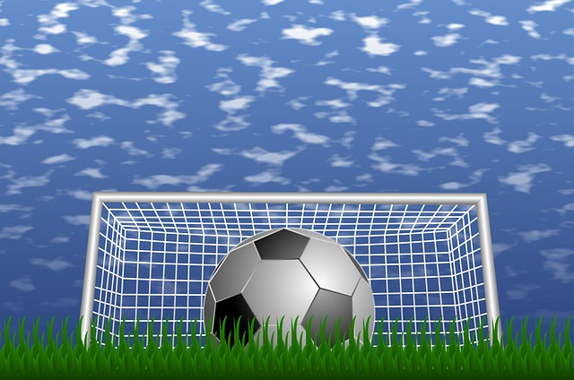

Soccer Trying to Make it in the Football World
In many countries, the names of the game sound alike. The words football, fussball and futbol... They don't only sound alike, they're the exact identical game. It is a sport in the U.S., however, they call it soccer. Major League Soccer (MLS) as an American professional soccer league has been in existence for a while now.
Contrary to other American major league sports MLS doesn't dominate attention of the public on a international scale, nor do the champion is named the "World Champion". MLS is in an ever-changing process of development. Did it attract notable media and public interest in the world football? No!
Soccer as the 2nd, 7th , or 10th most popular sports in the U.S. doesn't make a huge difference. American public will still follow the NFL, MLB, NHL or NBA. The world's population will follow those leagues with identical attention because they are the world's most popular sports leagues.
In recent times, with the advent of global media, the world's sporting scene has begun to change; in that way, English football, the Premier League claims to be 'The greatest Show On Earth' and is actually the most watched and most watched sporting league, with a current world-wide audience that is half-a-billion and media revenues for seasons 2007 to 2010 worth over $5 billion. If everyone around the world is watching football leagues like English Premiership or Spanish La Liga which is the case, who will watch the American major leagues outside of the American public? Is it likely that a significant portion of the American population choose to watch soccer leagues in other countries as well? This is the reason soccer has become an issue in the U.S sports.

Every now and then, it happens that MLS officials would awaken from their sleep under the shadows of the top 4 American premier leagues around the time the World Cup takes places and it would become apparent how significant the football game is in the terms of world public interest media attention, sponsors, and sponsors.
As the noise around World Cup passes, the MLS would slip back into sleepiness. It wasn't to be similar to that following 2006's World Cup 2006 in Germany when the world public had an accurate picture of European the modern football stadiums, multi-million dollar player deals... and the global spotlight took the spotlight on football.
This time , it's not MLS who should promote MLS, it's the whole of American professionally-run sports entertainment. This is an economic opportunity that will generate a lot of money. the world of football was too great to be missed or neglected. yallashoot
in the spring of 2007, U.S. soccer attempted to be the first to take the world of soccer by storm by offering David Beckham a $250million contract which was the most expensive football player contract ever in the history of the sport. Many have claimed it was the deal that brought Beckham in America is believed to be the most significant in the history of sports. MLS sent out a message across the planet.
In the summer heat as European leagues were between the seasons and the water was still, MLS got the wanted media attention, as news stories were heavily focused on the Beckham family's move to LA. Did the stories outshine the world's football media and the public's attention to MLS yet? No!
Are the $250 million worth of exposure in the long run? Time will tell. Autumn came, European and international leagues are fully in play, and the world's sports media publish smaller pieces on Beckham, LA Galaxy and the MLS. And to make matters worse, LA will not even make it to the play-offs. This gives the media less than a few stories to report on.
In the league that has been able to lose around $350 million over the first 8 years after its foundation (a BusinessWeek report from 2004) in which at moment, the only teams in existence, LA Galaxy and FC Dallas are making money, with three more teams expected to be profitable within a year. A $250,000 single-player investment is a gamble. If it is, what are the chances?
In recent years, several notable players chose to make the decision to leave the top teams of Europe and South America for a financially lucrative contract with teams from the Gulf countries. There was a lot of coverage about the lucrative transfer deals, though there was not a lot of information about those leagues.
Not to be forgotten, before David Beckham's arrival, MLS attempted to gain exposure with Freddy Adu, a player under the age of 16 who was chosen as"The Next" Pel e. Adu received significant media attention, the world knew he's playing in the MLS club DC United of the MLS.
Many may or may not know that Adu during the summer of 2012, at 18 years old, signed a contract to play in Europe with Benfica FC - Portugal. Prior to signing with Benfica, Adu spent some time in Man Utd's training camp, Alex Fergusson did not give Adu the reason why he should stay.
Benfica has paid the club from Salt Lake City $2million for the release form for the player and Adu will be receiving $1.2million per year, which is solid but not the deal that is the best announcement. Adu wasn't on Benfica's Champions League match roster against Milan on September. 18th. In comparison, to a player similar to Messi at his current age was in the starting 11 for the giant football club FC Barcelona. The MLS didn't appear to have gained substantial attention for the sport due to Adu, nor contributed to his growth into a top player in the world, as one would expect. Through the years, many great players of all time played soccer in the United States and the United States, such as Pel E, Beckenbauer, Eusebio...
After decades of attempts that didn't yield the desired results for the success in U.S. soccer, what changes Beckham's play (currently in a six-week absence due to injury) can make in the near future? Let's glance at the MLS which is a professional soccer league that started in 1996 and has more than decade of playing experience. يلا شوت
Logistics and facilities
At the time of publishing this texton September 27, 2007 Beckham's LA Galaxy is playing against the KC Wizards. SPORTiana.com is the writer of this article, got the knowledge of MLS by KC Wizards in the summer of 2006, which was a time before Beckham's entry as a player in MLS. At that time the head coach of KC Wizard was unhappy with having him as well as two assistant coaches running the team's training, forcing him to take a number of players from the 26-man roster waiting on the bench because of the inability to bring them all onto the field during trainings simultaneously.
The training facilities included one open-air and an in-door field that was used for gym for team NFL team KC Chiefs, within the Arrowhead Stadium complex. The Wizard's open-air training field was situated right next to the fence that was situated in front of KC Chiefs training fields.
The grass that was on the Wizards field was split into with the turf on the ground being that was as solid as a stone, a field where many players would not train in order to avoid injuries. A head coach, two assist coaches, Fitness trainer... NFL stadium and facilities... small office space on the corner of a football stadium... the place is quite different with the teams that were in leagues where Beckham previously played.